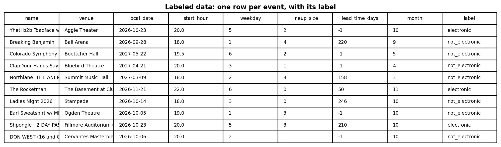
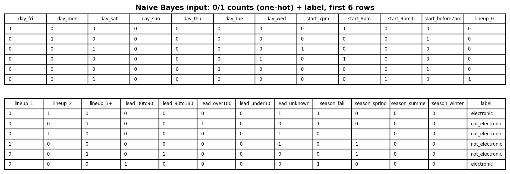
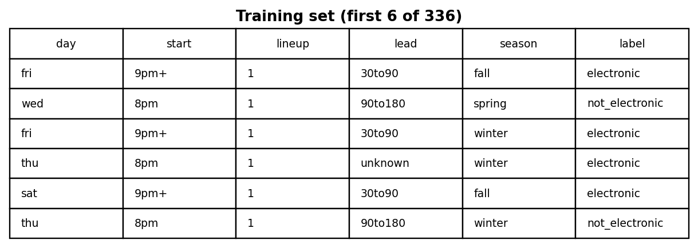
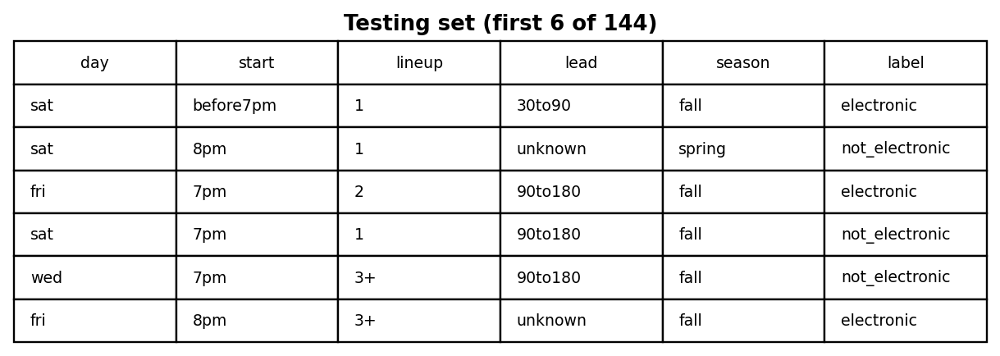
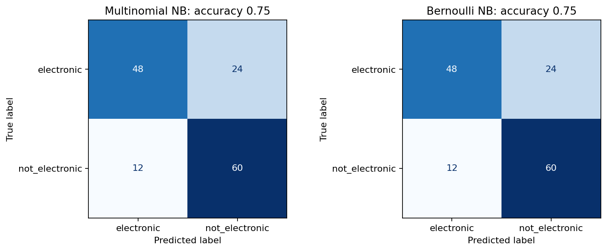
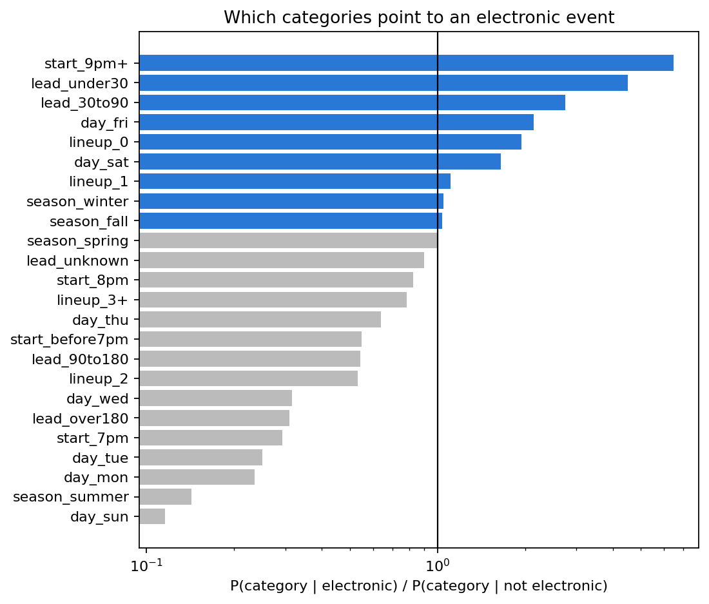

Naive Bayes
Can an electronic night be recognized from its format alone: when it starts, which day, how many artists, and how far ahead tickets go on sale?
Overview
Naive Bayes (NB) is a supervised classifier based on Bayes’ rule. For a new row with features x1, …, xn, it computes how likely each class is, P(class | x) ∝ P(class) × P(x1 | class) × … × P(xn | class), and predicts the class with the highest value. It is called “naive” because it assumes the features are independent of each other within a class. That is rarely exactly true, but it makes the model simple and fast, and it still works well in practice. NB is used for spam filtering, sorting documents by topic, sentiment analysis and other text problems, and as a quick baseline for any classification task.
Multinomial NB treats each row like a document and each feature like a word count: P(feature | class) is learned from how often that feature appears in the training rows of each class. It needs non-negative counts. Laplace smoothing (alpha = 1) adds one to every count, so a feature never seen in a class does not make the whole probability zero. Bernoulli NB instead uses binary features (present or absent), and it counts the absence of a feature as evidence too. (A third version, Gaussian NB, is for continuous features and assumes a normal distribution in each class.) Multinomial NB is the main model here, and Bernoulli NB is run on the same data for comparison.
Example from this project’s model. Take an event on a Saturday, starting at 9 pm or later, with one artist, going on sale less than 30 days ahead, in the fall. Each probability comes from the training counts with Laplace smoothing, for example P(start_9pm+ | electronic) = (83 + 1) / (840 + 24) = 0.0972.
| P(· | electronic) | P(· | not electronic) | |
|---|---|---|
| Prior P(class) | 0.5 | 0.5 |
| day_sat | 0.0764 | 0.0463 |
| start_9pm+ | 0.0972 | 0.0150 |
| lineup_1 | 0.1065 | 0.0961 |
| lead_under30 | 0.0104 | 0.0023 |
| season_fall | 0.1296 | 0.1250 |
| Product | 5.33 × 10−7 | 9.59 × 10−9 |
Normalizing, P(electronic | event) = 5.33 / (5.33 + 0.0959) = 0.98, so the event is classified as electronic. The late start and the short on-sale window do most of the work, the same result scikit-learn gives.
Data Prep
Supervised methods need labeled data: every row must already have
the answer the model is learning to predict. Here the label is
electronic or not_electronic, taken from the Module 1
is_electronic flag. The features describe only the event’s
format (start hour, weekday, number of artists, days between on-sale and
the event, and month), with no genre and no venue, so the model cannot simply read
the answer. Only 17% of the 1,398 live events (collected 1 November 2026) are
electronic, so the data is a balanced sample: all 240 electronic
events plus 240 random non-electronic events. With equal classes, guessing would
score 50%.

Multinomial NB needs counts, so each feature was binned into categories (for
example start_9pm+, day_sat, lead_under30)
and one-hot encoded. Each event becomes a row of 0/1 counts, like the words in a
short document (Figure 2).

The data was split with train_test_split into a training
set (70%, 336 events) used to build the model and a testing
set (30%, 144 events) used to measure it. The split is random but
stratified, so both sets are half electronic. The two sets must be
disjoint (no event in both): if the model were tested on events it
had already seen, it would be scored on memory instead of prediction, and the
accuracy would be too high.


- Labeled data: exports/module3/events_labeled.csv
- Training set: exports/module3/nb_train.csv · Testing set: exports/module3/nb_test.csv
Code
- labeled_data.py — builds the labeled, balanced sample
- naive_bayes.py — binning, one-hot encoding, the split, Multinomial and Bernoulli NB, and the figures
X = pd.get_dummies(binned).astype(int) #0/1 counts
X_train, X_test, y_train, y_test = train_test_split(X, y, test_size=0.3,
random_state=42, stratify=y)
mnb = MultinomialNB(alpha=1)
mnb.fit(X_train, y_train)
pred = mnb.predict(X_test)
accuracy_score(y_test, pred)
confusion_matrix(y_test, pred)Results
Multinomial NB classified 75% of the test events correctly, against 50% for guessing. It found 48 of the 72 electronic events and 60 of the 72 non-electronic ones, so it is better at ruling events out than at catching every electronic one. Bernoulli NB made exactly the same predictions. Every event has exactly one 1 in each of the five groups, so counting what is present (multinomial) and also using what is absent (Bernoulli) end up ranking the events the same way.

Because NB learns P(feature | class), it shows which categories push toward “electronic” (Figure 6). A start at 9 pm or later is 6.5 times more common among electronic events, going on sale less than 30 days ahead is 4.5 times more common, and Friday, Saturday and listings with no named artists also point to electronic. Sunday to Wednesday shows and early starts point the other way.

Conclusions
Without any genre label, the format of a listing identifies an electronic event about 3 times out of 4. Electronic nights in Colorado are late (9 pm or later), on Fridays and Saturdays, and announced only a few weeks ahead, which matches the nightclub group found on the Clustering tab. This means the project can flag likely electronic shows even when Ticketmaster’s genre is missing or just “Other”, which is the case for about a quarter of all listings. The model misses a third of the electronic events: none of the missed ones start at 9 pm or later, and most are big concert-style shows (Red Rocks, Mission Ballroom, the Fillmore) that look like any other concert. A few are labeling errors (a Nutcracker performance is tagged electronic). Format is useful, but not enough on its own.